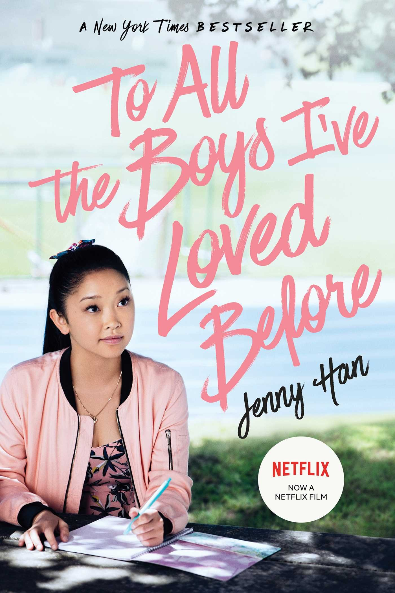

| 1. THE FAULT IN OUR STAR |
 |
|
Written by John Green (2014) & Directed by Josh Boone (2014)
Language: English
Pages: 313
Publisher: Penguin Books; Reprint edition (April 8, 2014)
Amazon Best Sellers Rank:
- #1,718 in Books (See Top 100 in Books)
- #14 in Teen & Young Adult Contemporary Romance
- #5 in Teen & Young Adult Fiction about Self Esteem & Reliance
- #8 in Teen & Young Adult Fiction about Death & Dying
Sypnosis: Despite the tumor-shrinking medical miracle that has bought her a few years, Hazel has never been anything but terminal, her final chapter inscribed upon diagnosis. But when a gorgeous plot twist named Augustus Waters suddenly appears at Cancer Kid Support Group, Hazel’s story is about to be completely rewritten.
Insightful, bold, irreverent, and raw, The Fault in Our Stars brilliantly explores the funny, thrilling, and tragic business of being alive and in love.
|
| 2. ME BEFORE YOU |
|
|
Written by Jojo Mayes (2012) & Directed Thea Sharrock (2016)
Language: English
Pages: 480
Publisher:Penguin Books (2012)
Amazon Best Sellers Rank: #228,237 in Books (See Top 100 in Books)
Sypnosis: Lou Clark is an Average Jane from a small town in England. She worked at café until its owner abruptly announced that he was shutting the place down, leaving her jobless. Bummed, Lou goes job hunting until she lands a gig as a caretaker for a paralyzed man named Will Traynor.
|
| 3. TO ALL THE BOYS I LOVED BEFORE |
|  |
|
Written by Jenny Han (2014) & Directed by Susan Johson (2018)
Language: English
Pages:368
Publisher: Simon & Schuster Books for Young Readers (April 15, 2014)
Sypnosis: What if all the crushes you ever had found out how you felt about them…all at once?
Sixteen-year-old Lara Jean Song keeps her love letters in a hatbox her mother gave her. They aren’t love letters that anyone else wrote for her; these are ones she’s written. One for every boy she’s ever loved—five in all. When she writes, she pours out her heart and soul and says all the things she would never say in real life, because her letters are for her eyes only. Until the day her secret letters are mailed, and suddenly, Lara Jean’s love life goes from imaginary to out of control.
|